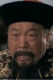
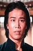

Also known as:Scorching Sun, Fierce Wind, Wild Fire (original title)
Country:Hong Kong, 92 minutes
Spoken languages:Mandarin
Genres:Action
Director(s):Sun Sheng-Yuan
Writer(s):
Video Codec:Unknown
Number: 2560


Certification:
Storyline:
During China's 1920s Republican Period, warlords carve out personal fiefdoms across the country and impose self-serving laws with the barrel of a gun. Into this anarchy rides a masked feminine Zorro, nom de guerre Violet, to do battle, right wrongs and foment rebellion against the most corrupt and brutal warlord of all, Tung Ta-Chou. Unbeknownst to Tung, however, Violet is his own daughter. Tung orders his psycho enforcer Master Wu to track down and dispose of this pesky rebel queen. Meanwhile, Violet begins a flirtation with an attractive stranger who comes to town with the other half of a treasure map held by Tung. Ultimately, Master Wu betrays the warlord on the lure of the complete treasure map, enabling Violet and the stranger to apprehend Master Wu and beat the warlord at his own game.
Cast:  


Medium: Original DVD,
Loaned: No
Aspect ratio: Unknown